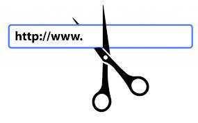

Features
Shorten URL
Customize URL
Generate QRCode
Analytics
Delete URL
SHORTEN
LINKS
SHARE BIG IDEALS.
Scissor makes it easy to create short, memorarable URLs for
any website, perfect for social media, massaging, and more.

Get Started